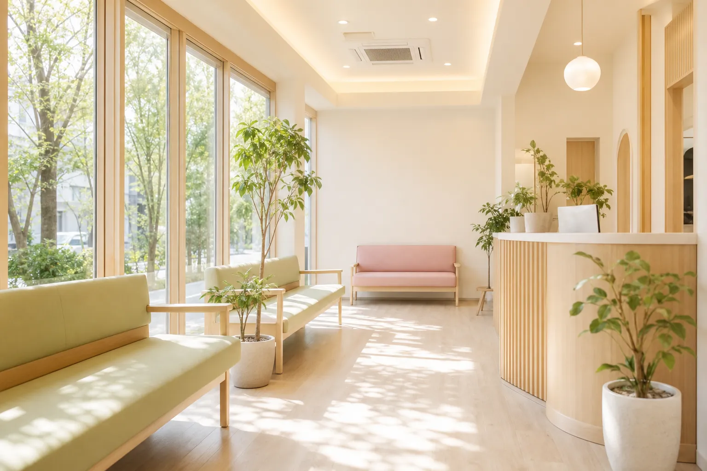
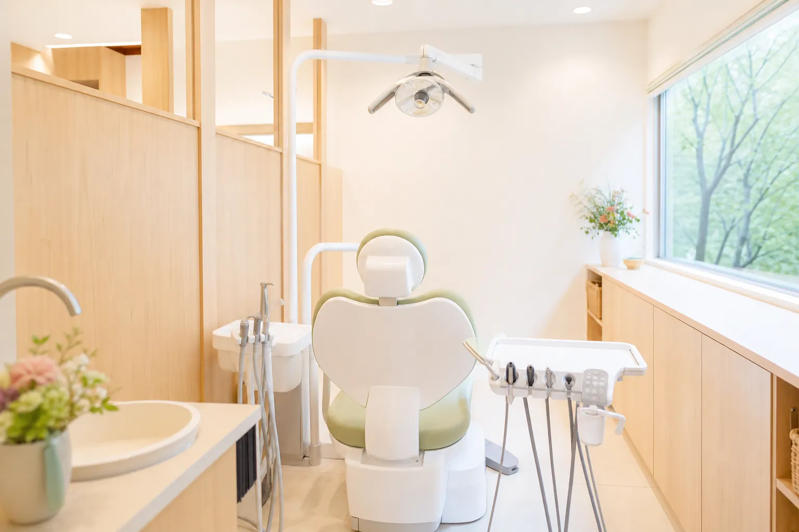
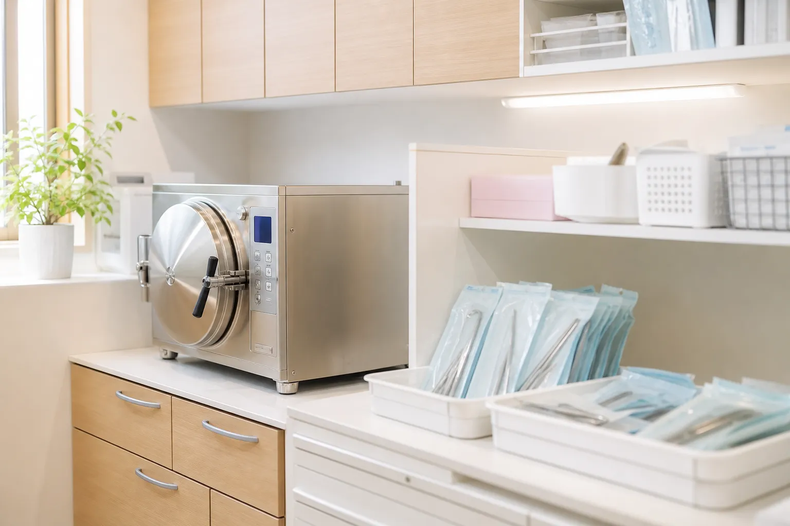
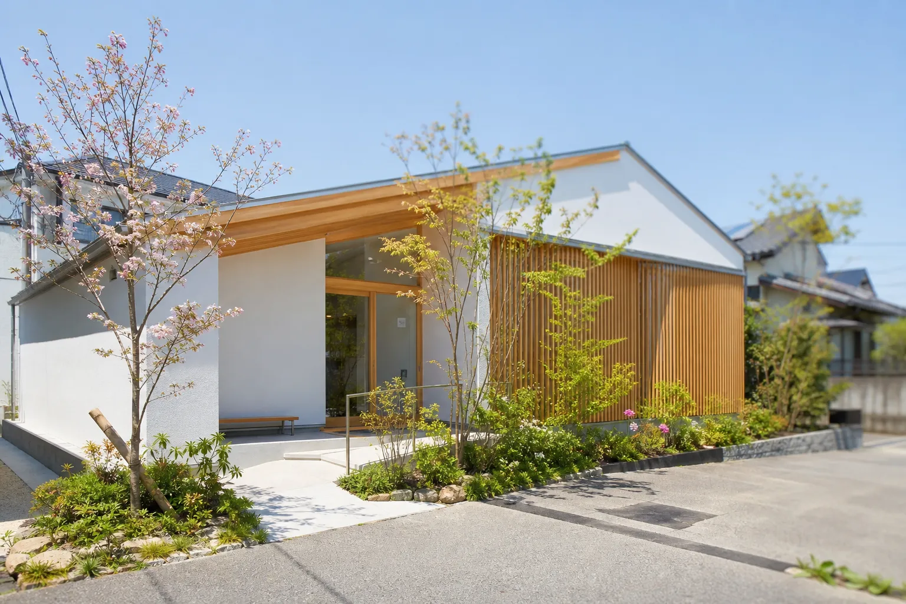

一般歯科保険
むし歯の治療、詰め物・被せ物のやり直し、歯がしみる・欠けたなど。できるだけ削る量を抑えることを心がけています。
Family Dental Clinic名古屋市〇〇区・〇〇駅 徒歩5分
小さなお子さまからご年配の方まで。
お口のことを気軽に相談できる、
Web予約は24時間受付。初めての方も、お子さまだけの受診もどうぞ。

11月の休診日のお知らせ（11月3日・23日は祝日のため休診です）
10月の「はみがき教室」は第3土曜日に開催します（予約制・無料）
Web予約の受付時間を拡大しました。24時間ご予約いただけます
Philosophy
歯の治療は、ご本人が納得して進めることが
お口の写真や検査結果を一緒に見ながら、今の状態と治療の選択肢をお伝えします。ご希望をうかがってから治療を始めます。
むし歯や歯周病は、毎日のケアと定期的なメンテナンスで予防しやすくなります。歯科衛生士がおひとりずつに合ったケアをご提案します。
キッズスペースや段差の少ない院内、ベビーカーのまま入れる待合室。親子で同じ日に予約をお取りすることもできます。
Medical
歯科・小児歯科・矯正歯科・歯科口腔外科。
こんなときは、ご相談ください
むし歯の治療、詰め物・被せ物のやり直し、歯がしみる・欠けたなど。できるだけ削る量を抑えることを心がけています。
はじめての歯医者さんは、器具に触れてみることから。お子さまのペースに合わせ、フッ素塗布やシーラントでむし歯予防をサポートします。
歯科衛生士による歯石取り、歯面清掃、ブラッシング指導。3〜6か月ごとの定期検診で、小さな変化を早めに見つけます。
歯ぐきの腫れや出血、口臭が気になる方へ。歯周ポケットの検査を行い、状態に合わせたクリーニングと治療を段階的に進めます。
「合わない」「噛みにくい」入れ歯の調整・修理から、新しく作る場合のご相談まで。保険・自費それぞれの特徴をご説明します。
歯並びのご相談や、親知らずの診査を行っています。専門的な処置が必要な場合は、連携する医療機関をご紹介します。
自費診療を行う場合は、事前に内容・費用・期間、考えられるリスクや副作用をご説明し、ご同意をいただいてから進めます。
First Visit
初診の日は、お話をうかがう時間を
初診時は問診票のご記入があります。ご予約時間の10分前にお越しいただけるとスムーズです。
お電話またはWeb予約からどうぞ。急な痛みや腫れがある方は、お電話いただければ当日の受診を調整します。
気になる症状やご希望、治療で不安なことをご記入ください。Web問診をご利用いただくと、来院後の待ち時間が短くなります。
レントゲン撮影や口腔内写真で状態を確認し、モニターで画像を見ながら今のお口の様子をご説明します。
治療の選択肢と、回数・期間の目安をお伝えします。お仕事や学校の予定に合わせて、通院ペースを一緒に決めましょう。
治療が終わったあとは、定期検診のご案内をお送りします。お口の健康を長く保つための習慣づくりをお手伝いします。
Our Clinic
木のぬくもりと、やわらかな光。

Like a walk in the woods
森を歩くときのような、
白と木と緑だけで整えた院内は、音もできるだけ静かに。治療の合間に深呼吸できる場所でありたいと考えています。

Doctor
「歯医者さんが苦手」という方にこそ、
院長・歯科医師森下 さくらSakura Morishita
Reservation
初めての方も、お子さまだけの受診も歓迎です。
Hours & Access
| 診療時間 | 月 | 火 | 水 | 木 | 金 | 土 | 日 |
|---|---|---|---|---|---|---|---|
| 9:00〜13:00 | ● | ● | ● | ／ | ● | ● | ／ |
| 14:30〜19:00 | ● | ● | ● | ／ | ● | ▲ | ／ |
比較的ご予約が取りやすい時間帯
平日の午前（9:00〜11:00）は、夕方や土曜日に比べてご予約が取りやすくなっています。初診でゆっくりご相談されたい方におすすめです。

FAQ
このほかにも、気になることがあれば
歯が生えはじめた頃（生後6か月〜1歳ごろ）から受診いただけます。最初は歯みがきの仕方や食生活のご相談だけでも大丈夫です。
予約制ですが、急な痛みや腫れ、詰め物が取れたなどの場合は、お電話いただければ当日の受診を調整します。お待ちいただく場合がありますのでご了承ください。
表面麻酔を使ったり、麻酔の注射をゆっくり行ったりと、痛みに配慮した処置を心がけています。不安なことは遠慮なくお伝えください。途中で休憩をとることもできます。
保険診療を中心に行っています。自費診療をご提案する場合は、事前に費用・期間・リスクをご説明し、ご納得いただいてから進めます。
はい、できます。お電話またはWeb予約の備考欄に「親子で」とご記入ください。保護者の方の治療中は、キッズスペースでスタッフがお子さまを見守ります。
Reservation
Web予約は24時間受け付けています。